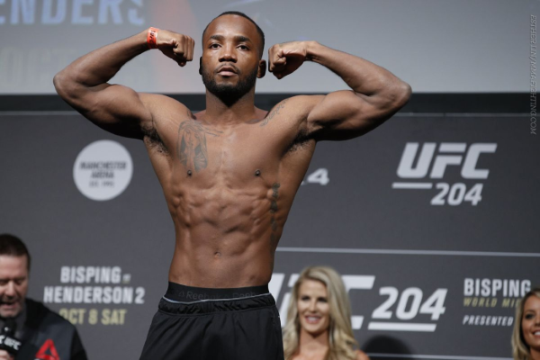
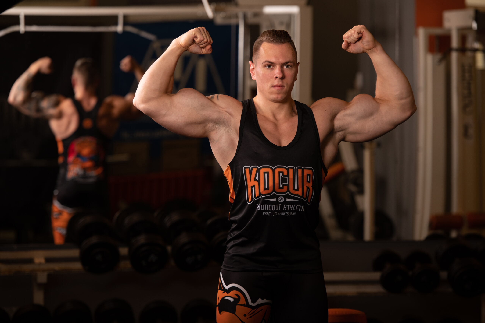
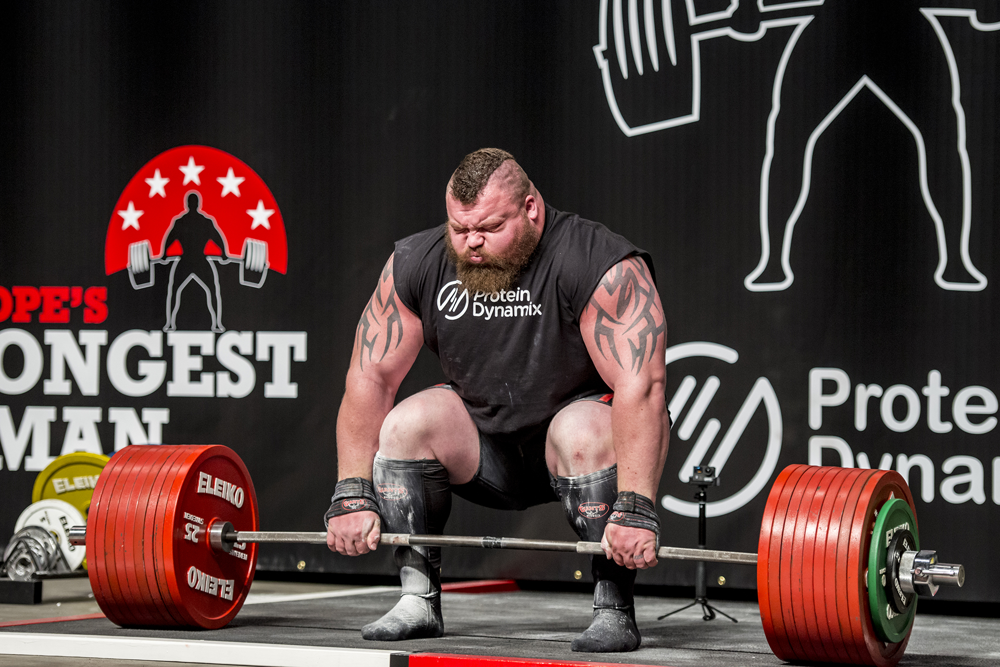
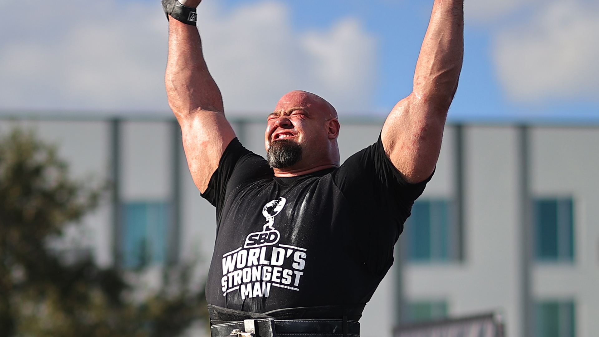
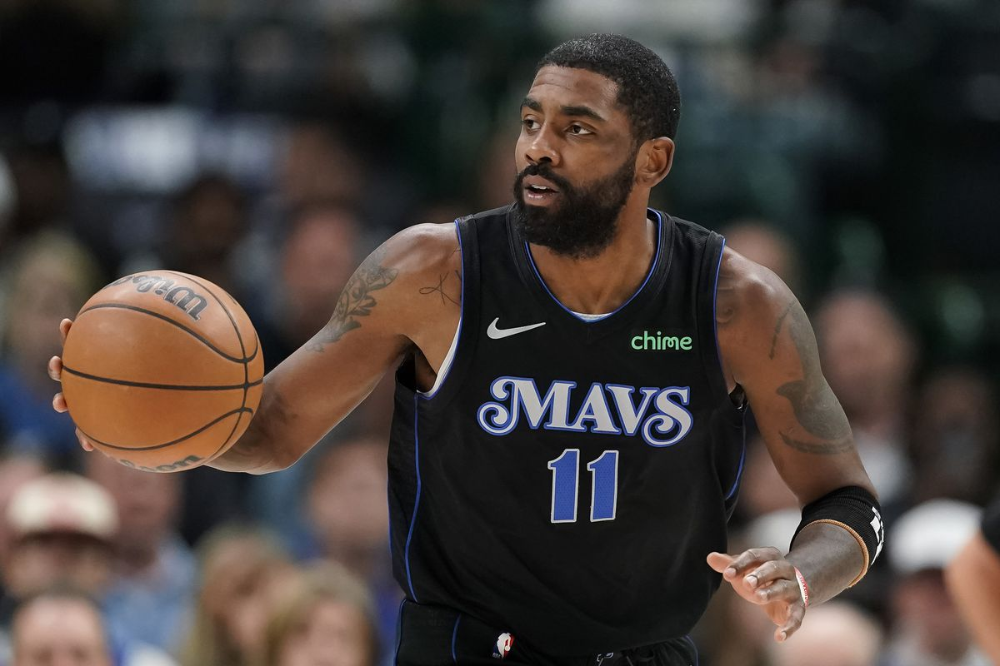
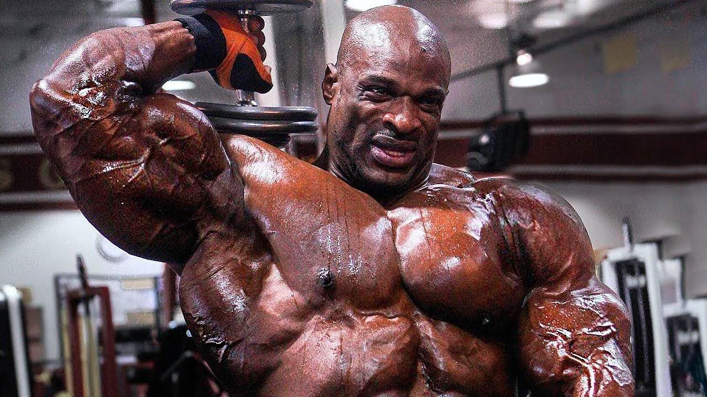
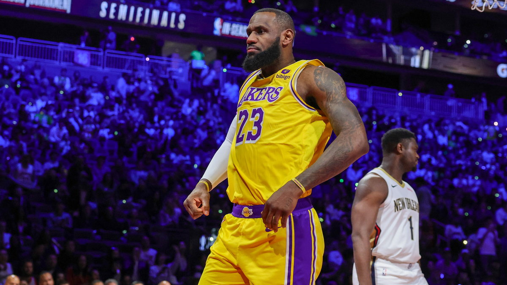

Leon Edwards
Leon Aaron "Rocky" Edwards (ur. 25 sierpnia 1991 w Kingston) – angielski zawodnik MMA pochodzenia jamajskiego walczący
w kategorii półśredniej. Ma 188 cm wzrostu i waży 77 kg. Od 2014 roku zawodnik UFC - Ultimate Fighting Championship, amerykańskiej organizacji mieszanych sztuk walki założonej w 1993 roku. Pojedynki odbywają się w ośmiokątnym ringu otoczonym siatką, zwanym oktagonem. Autor jednego z najszybszych nokautów w historii tej ligi.

Krzysztof Wierzbicki
Krzysztof "Mr. Deadlift" Wierzbicki - polski trójboista siłowy, rekordzista Europy i świata, 5-krotny mistrz świata w trójboju. Ma 33 lata, 180 cm wzrostu i waży ponad 100 kg. Na oficjalnych zawodach najlepsze wyniki to 320 kg na przysiadzie, 200 kg na ławce i oszałamiające 447.5 kg w martwym ciągu, chociaż nieoficjalnie posiada rekord świata w ciągu, który zrobił na treningu - 502.5 kg! Już w tym roku będzie podbijał poprzeczkę i próbował swojej siły w ciągu 520 kg. Zaczął ćwiczyć już w wieku 10 lat, a 3 lata później na klatę wyciskał już 100 kg!

Eddie Hall
Eddie Hall jest jednym z najsilniejszych ludzi na świecie. Ten 30-latek z Anglii ustanowił rekord w martwym ciągu na 500
kg! Obecnie posiada tytuł World’s Strongest Man 2017 oraz UK’s Strongest Man. Brytyjski siłacz zdobył status celebryty w
społeczności kulturystów i świecie fitnessu. Stało się to zaraz po tym, gdy jako pierwszy oficjalnie podniósł 500 kg.

Brian Shaw
Brian Shaw to znany i utytułowany strongman z Kolorado. Jest czterokrotnym zwycięzcą zawodów World's Strongest Man w
latach 2011, 2013, 2015 i 2016. Brian Shaw miał jedną z najbardziej imponujących karier w Strongman w historii. Brał
udział w 66 międzynarodowych i krajowych zawodach i wygrał 28 z nich.

Kyrie Irving
Kyrie Andrew "Uncle Drew" Irving (ur. 23 marca 1992 w Melbourne) – amerykański koszykarz pochodzenia australijskiego, występujący na pozycji rozgrywającego, mistrz świata (2014) oraz olimpijski (2016), obecnie zawodnik Dallas Mavericks.

Ronnie Coleman
Ronnie Coleman to amerykański kulturysta, jeden z najbardziej utalentowanych sportowców wszech czasów. Ośmiokrotnie
zwyciężył Mr Olympia, najbardziej prestiżowe zawody kulturystyczne na świecie. Wiele osób to właśnie jego uznaje za
legendę kulturystyki.

LeBron James
LeBron James (ur. 30 grudnia 1984 w Akron, Ohio) – amerykański koszykarz grający w Los Angeles Lakers w NBA. Najlepszy
strzelec w historii NBA pod względem liczby zdobytych punktów. Jego nominalna pozycja to niski skrzydłowy, lecz warunki
fizyczne Jamesa (dynamika, waga) oraz jego wyjątkowy przegląd pola sprawiają, że trudno jest przyporządkować mu pozycję
według tradycyjnych kryteriów, gdyż w praktyce może on pełnić zarówno rolę rozgrywającego, jak i silnego skrzydłowego.
Otrzymał nagrodę najbardziej wartościowego gracza (MVP) ligi w sezonach 2008/2009, 2009/2010, 2011/2012, 2012/2013 oraz
MVP finałów – 2012, 2013, 2016 i 2020.
